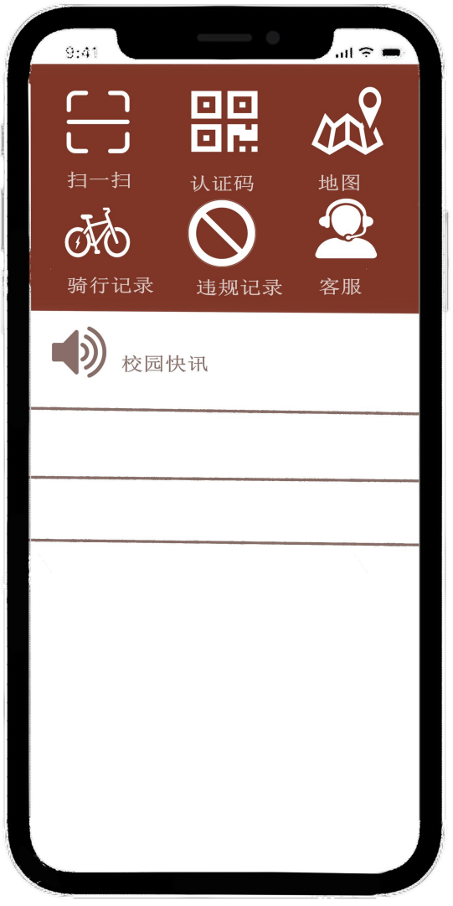

Critique
Feedback
Project proposal:
假设你的小组是校区安全部门聘请的设计团队，面对校园电动车较多的现象，通 过设计“校园电动车ID”的HCI界面对电动车进行管理。本实验课对应设计思维 模式“原型系统”部分，请使用低保真度的sketch方法和中保真度的WireFraming 方法，进行两类人机交互界面的设计。
- 在校园电动车本体上放置的“ID卡”，要求一定要用到“二维码”元素，包含正反面
- 扫描上述二维码之后的APP显示页面，若展现信息过多建议拆分成2-3个子页面
- 本实验为团队任务，分组完成（无需重新分组，按已形成分组）
- 形成文字实验报告，两种设计方案附图，内容包含设计思路，界面组成，界面元素等内容
- 建议先在纸面上用sketch+notation的方法进行低保真原型设计，再进行WireFraming的中保真原型设计，注意 wireframing 使用工具任意选择，比如 photoshop, powerpoint 都可以。
Critique Feedback-WireFrame:
总体语气： 批判性反馈的总体语气是建设性的，着重于对 Wireframe 设计的改进和精炼。- 清晰度和可读性: 重要性： 高
- 屏幕间的一致性: 重要性： 中
- 用户流程和导航: 重要性： 高
- 图标和图像: 重要性： 中
- 交互反馈: 重要性： 中
问题： Wireframe 上的一些元素不够清晰或不容易阅读。文字大小、字体选择和颜色对比度需要改进。
回应： 我们将重新审查并修改文字大小、字体选择和颜色对比度，以确保更好的清晰度和可读性。这可能涉及调整布局和颜色方案，以提高视觉传达效果。
问题： 在不同屏幕中设计元素和布局上存在不一致性。缺乏统一的设计语言。
回应： 我们承认需要一致性，并将致力于建立统一的设计语言。这包括在整个应用程序中保持导航元素、颜色方案和整体美学的一致性。
问题： 一些用户发现导航流程令人困惑，特别是在主 ID 卡屏幕和随后的信息
屏幕之间切换时。 回应： 我们将重新评估用户流程，简化导航以实现更直观的体验。这可能涉及修改按钮的位置、改进视觉层次结构，并确保操作的逻辑顺序。
问题： 使用的图标和图像可能不是普遍理解或对一些用户来说有歧义。
回应： 我们将重新考虑图标和图像的选择，以确保它们是普遍可识别的。这可能包括进行用户测试，以确定任何潜在的困惑，并根据需要完善视觉元素。
问题： 对交互元素（如按钮或滑动）缺乏反馈，可能导致用户的不确定性。
回应： 我们将为交互元素提供视觉反馈，以增强用户对其操作的理解。这可 能包括通过微妙的动画或颜色变化来表示交互。
Updated wireframes
在解决这些批判性问题后，系统将在清晰度、一致性、用 户流程和整体用户体验方面取得显著的改进。经过精炼的 Wireframe 将确保更友 好、视觉一致的设计，满足最初设计任务中概述的要求。此外，将用户反馈纳入 修订中将提升系统的整体可用性。
ID卡正面

ID卡反面
APP界面首页
APP界面-扫一扫
APP界面-地图